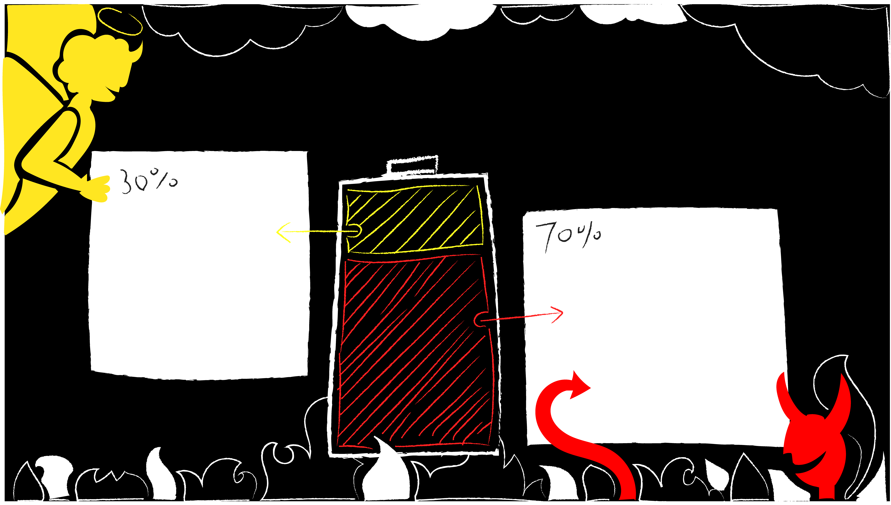

KLASSE!
SCHADE!
Dein Ergebnis!
gute Moral steckt in dir! KLASSE!
Es ist zwar nicht viel, doch du bemühst dich.
Entscheidungen sind hart.
Man trifft nicht immer die richtige,
doch man lernt daraus.
Dank dir kam die alte Dame heil
bei ihrem Mann zu Hause
an und konnte mit ihm zu Abend essen.
schlechte Moral steckt in dir! SCHADE!
Um schön miteinander zu leben,
kommt man an grundlegenden moralischen
Regeln nicht vorbei, auch wenn diese
unausgesprochen bleiben. Überlege nächstes
Mal noch ein bisschen mehr.
Durch deine Entscheidung wurde die Bedienung
entlassen, da Geld in der Kasse fehlte.
